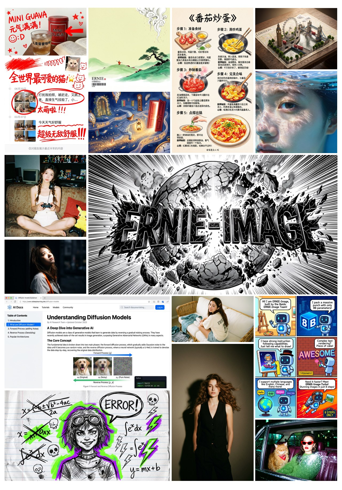
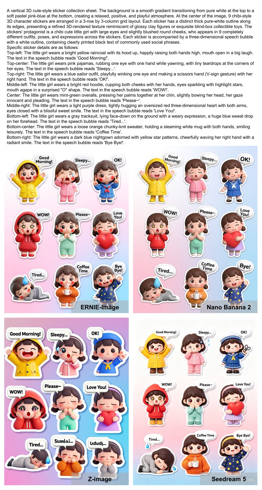
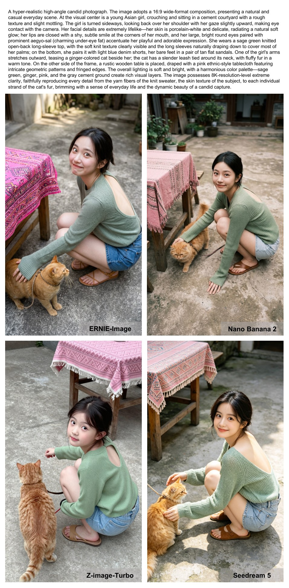

8B 開源 single-stream DiT 文生圖模型，不靠堆參數、改靠資料管線與對齊品質，逼近 Nano Banana 2.0 / Seedream 等閉源 SOTA。

與其把 T2I 模型越堆越大，ERNIE-Image 證明：更深的資料挖掘 + 更高的監督品質，能讓 8B 模型在指令跟隨、文字渲染、美學生成上逼近頂級閉源系統。
關鍵 insight：在訓練早期就注入「詳細圖像描述」，不只強化複雜指令跟隨，還大幅豐富 world knowledge → 因此不刻意合成領域資料，改用更精準的標註策略挖掘海量但低品質的圖庫。
核心對比：不從預定資料分層 resample（top-down），而是 bottom-up 從原始分佈逐步建構結構。
Anchor Losses 把模型基本生成能力「錨定」住防止崩塌。超參：β = 0.05、λwin = 0.35、λlose = 0.15。
當 base 模型與 reward 模型都夠強時，只需極少 DPO steps 就能對齊到位 — 而越少步、越能最小化 reward hacking 的暴露窗口。
模型從 ArtiMuse（8B VLM） 初始化，在內部標註資料微調；訓練資料沿「美學品質先驗 × 內容類別」兩軸保證多樣性。
| 美學模型 | SRCC | PLCC |
|---|---|---|
| ERNIE-Image-Aes | 0.7445 | 0.7598 |
| UniPercept | 0.4533 | 0.4748 |
| ArtiMuse | 0.4277 | 0.4704 |
| LAION-AES | 0.2944 | 0.3138 |
| 模型 | 類型 | Total HP |
|---|---|---|
| Nano Banana 2.0 | 閉源 | 5.39 |
| ERNIE-Image | 開源 | 5.07 |
| Seedream 5.0 | 閉源 | 5.03 |
| Wan2.7-Image | 開源 | 4.96 |
| Qwen-Image-2512 | 開源 | 4.78 |
| ERNIE-Image-Turbo | 開源 | 4.65 |
| Z-Image-Turbo | 開源 | 4.56 |
in-house 測試集（涵蓋攝影 / 廣告海報 / 平面設計），7 維度盲測 pass/fail 算 pass rate。僅 8B 參數就超越更大的 Qwen-Image 系列、逼近最新商用閉源。
| 維度 | ERNIE-Image | Nano Banana 2.0 |
|---|---|---|
| Knowledge | 95.24 | — |
| World | 94.05 | 98.51 |
| Physics | 92.56 | — |
| Spatial | 89.88 | 95.54 |
| Style | 84.82 | — |
| Aesthetic | 83.04 | — |
| Creativity | 62.80 | — |
| 模型 | Overall | Position | Attr. Bind |
|---|---|---|---|
| ERNIE-Image (w/o PE) | 0.89 | 0.86 | 0.79 |
| Qwen-Image | 0.87 | — | — |
| FLUX.2-klein-9B | 0.85 | — | — |
| Seedream 3.0 | 0.84 | — | — |
| GPT Image 1 | 0.84 | — | — |
細項亮點：Single Object 1.00、Two Object 0.96、Position 0.86（遠超多數）。Position 是 GenEval 最難項，ERNIE 在此特別突出，呼應其 Spatial Layout 專家設計。


與閉源最強者的差距仍落在 World / Spatial / Creativity 維度（Creativity 僅 62.80）；且作為技術報告，部分訓練細節（資料規模、完整超參）未完全公開。
ERNIE-Image 用 8B 開源模型，靠 bottom-up 資料挖掘、stabilized DPO、MT-DMD 多老師蒸餾與自建美學基礎設施，逼近 Nano Banana 2.0 / Seedream — 並開源權重、Turbo、Prompt Enhancer、美學模型與 ERIA-1K benchmark。
We challenge the scaling law of model size and show that further mining pre-training data can push beyond the limits of conventional understanding. By introducing more complex and detailed instructions at an early stage, the model naturally develops precise instruction following and strong text rendering.
我們挑戰模型尺寸的 scaling law，證明更深入挖掘預訓練資料能突破傳統認知的極限。透過在訓練早期就引入更複雜、更詳細的指令，模型自然湧現出精準的指令跟隨與強大的文字渲染能力。§5 Conclusion p.22
We adopt a bottom-up data construction and sampling strategy. Unlike top-down resampling pipelines that operate on predefined data strata, our pipeline starts from a massive raw image corpus. We first train an image categorization model to assign each image into one of 10,000 fine-grained visual categories … serving as the basis for data balancing in subsequent stages.
我們採用由下而上（bottom-up）的資料建構與採樣策略。不同於在預定資料分層上操作的 top-down resampling 管線，我們的管線從海量原始圖庫出發。首先訓練一個分類模型，把每張圖歸入 10,000 個細粒度視覺類別之一……作為後續階段資料平衡的基礎。§2.1 Pre-training p.3
A significant challenge in applying naive DPO to DiT models is reward hacking, where the model exploits the unbounded nature of L2 loss by excessively increasing the error scale of rejected samples. This often leads to representation collapse. To mitigate this, we introduce Anchor Losses as a regularization mechanism to ground the model's fundamental generative capability.
在 DiT 模型上套用 naive DPO 的一大挑戰是 reward hacking：模型利用 L2 loss 無上界的特性，過度放大被拒樣本的誤差規模，常導致表徵崩塌（representation collapse）。為緩解此問題，我們引入 Anchor Losses 作為正則化機制，把模型的基本生成能力「錨定」住。§2.2.2 Stabilized DPO p.5-6